- Backplane is a TOTALLY open-source workspace for agentic hardware development.
- Backplane is a KiCad fork.
- Backplane is created + maintained by real electrical engineers.
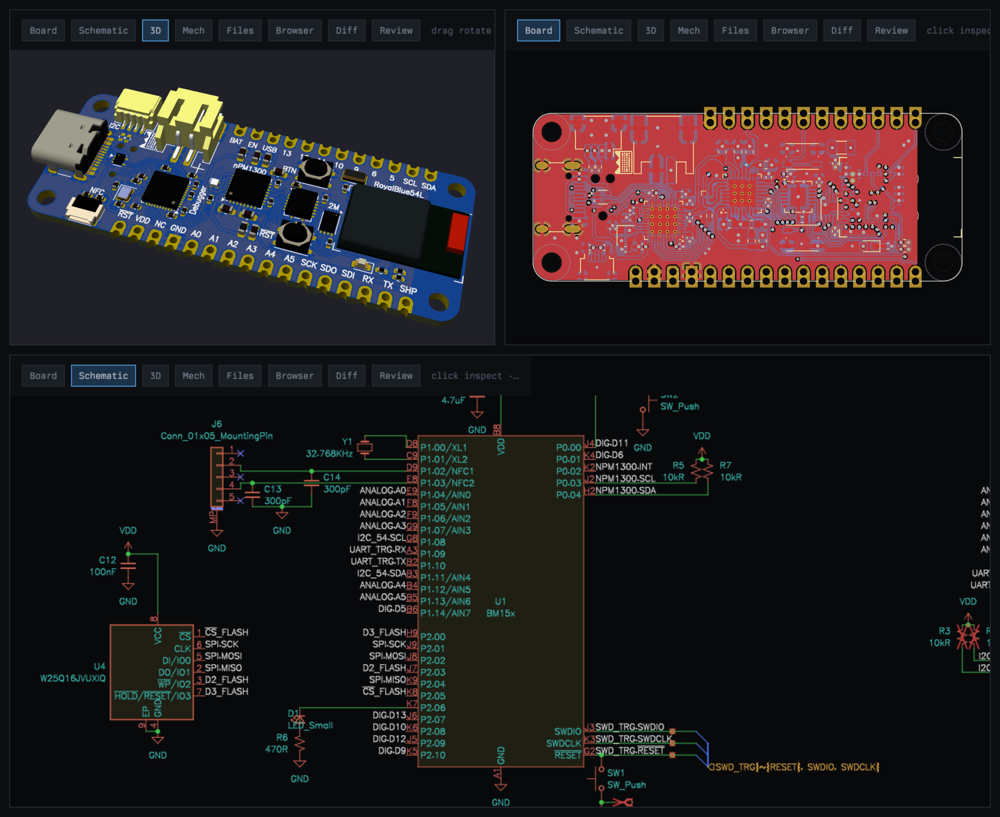
curl -fsSL https://github.com/i2cjak/backplane-bend/releases/latest/download/install.sh | sh
backplane
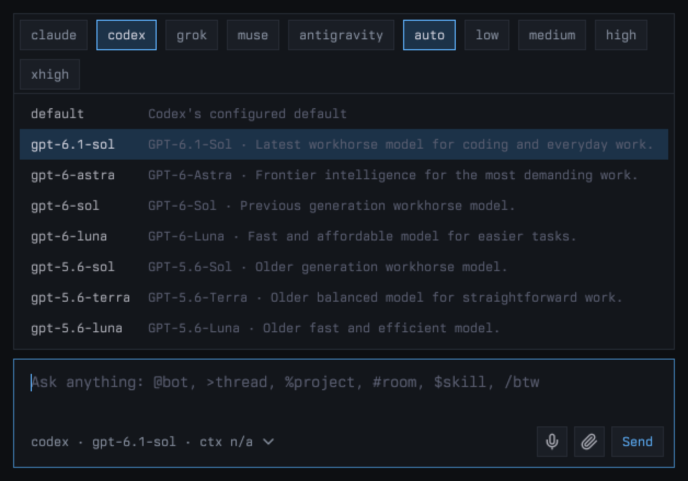
The real VALUE of Backplane is in its KiCad + FreeCAD viewers. See EVERY step the agent takes, click on specific components and reference them in the workbar. Backplane ships with a FULL suite of CAD-specific skills and a KiCad fork that adds additional instrumentation for LLM control (IPC schematic API, for instance).
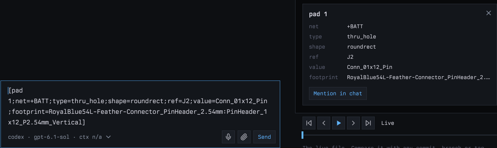
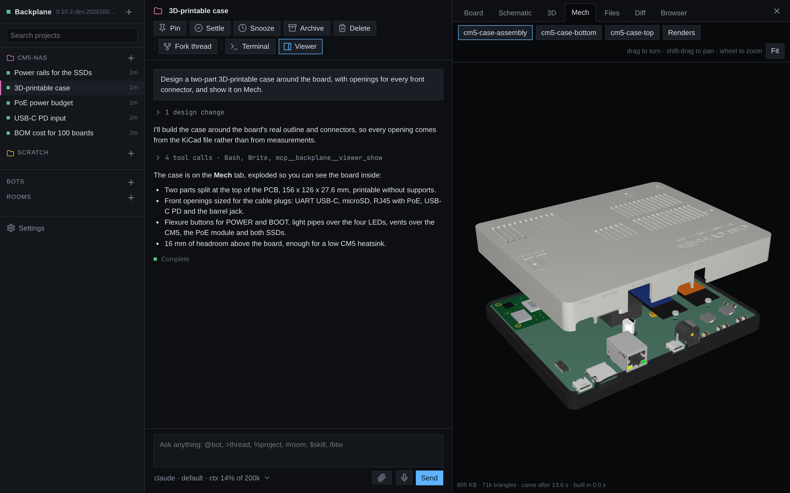
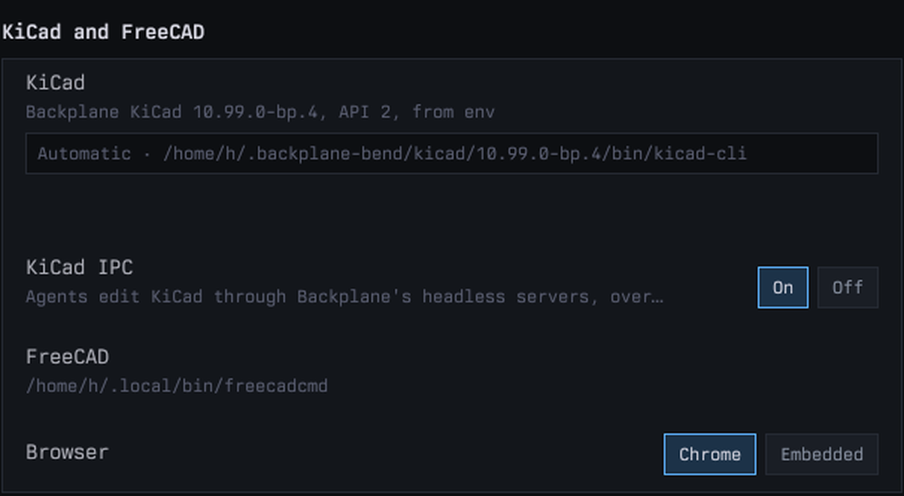
Backplane features some nice harness orchestration primitives. We have projects that contain threads (wow, a truly novel idea), bots, and an "uberbot" that coordinates bots, projects, and threads. Any harness can create subagents with any other harness, and all harnesses can send messages between threads.
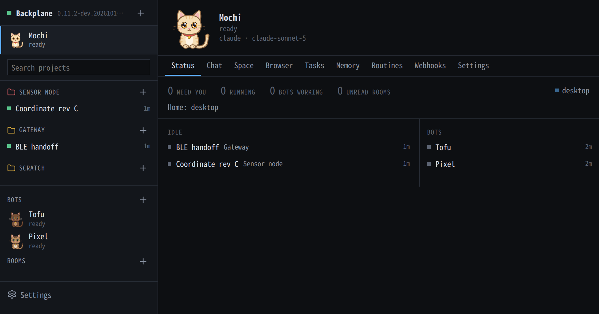
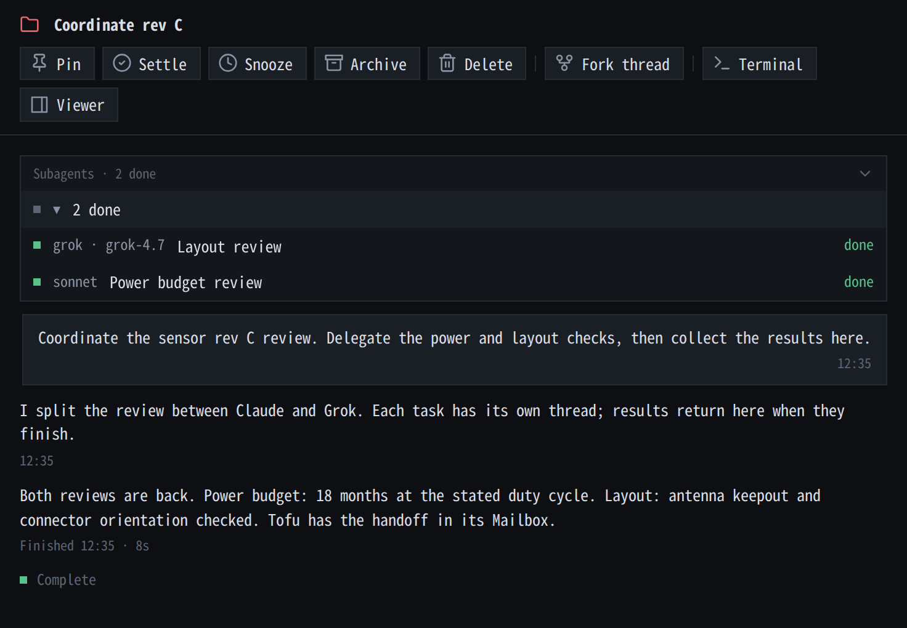
We also ship persistent agents (catbots) to handle specific tasks. They have webhooks, etc., whatever you expect BUT also ship with a nice mailbox system for communication and a "space" in which the bot can create a persistent webapp.
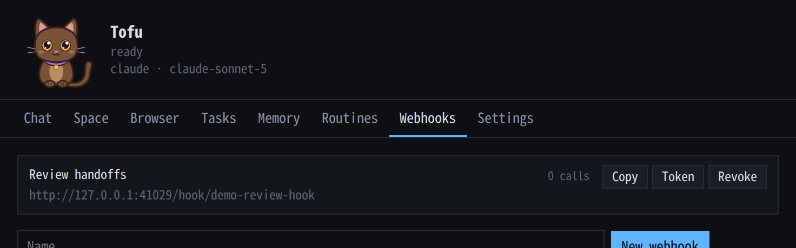
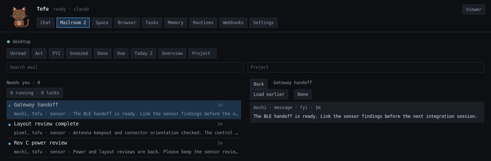
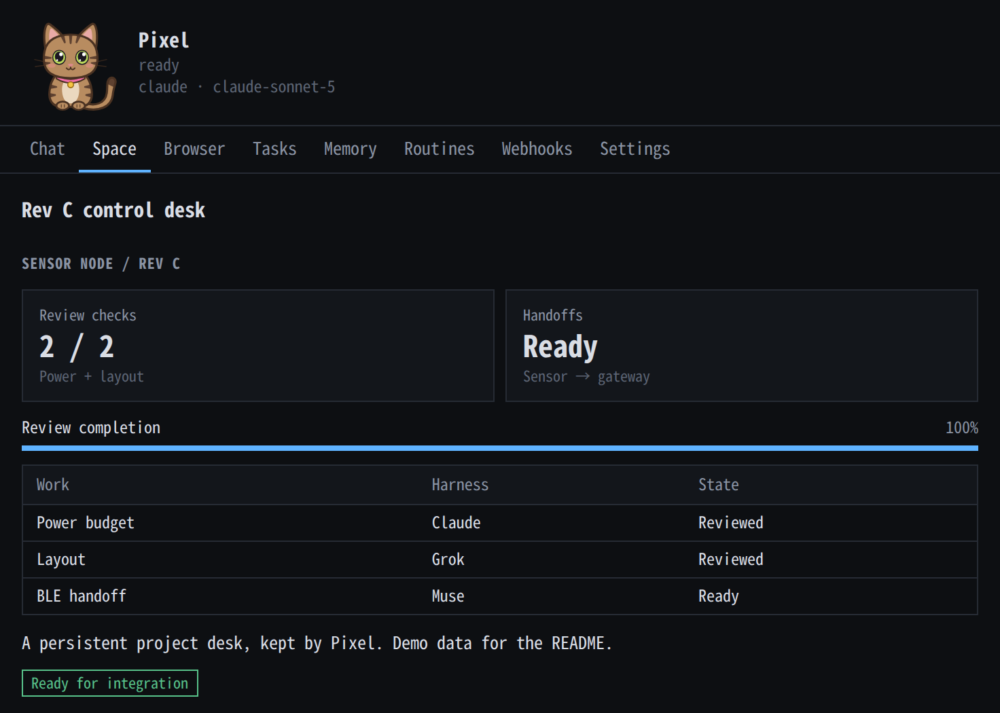
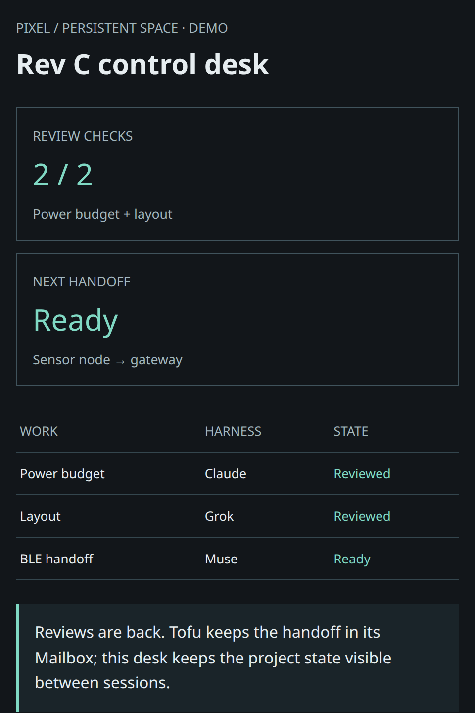
Other features
-
Clickable links between threads and bots and projects.
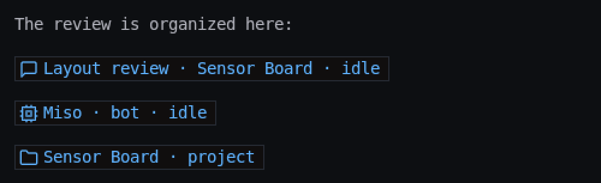
-
Links to other Backplane items with >, #, %, @.
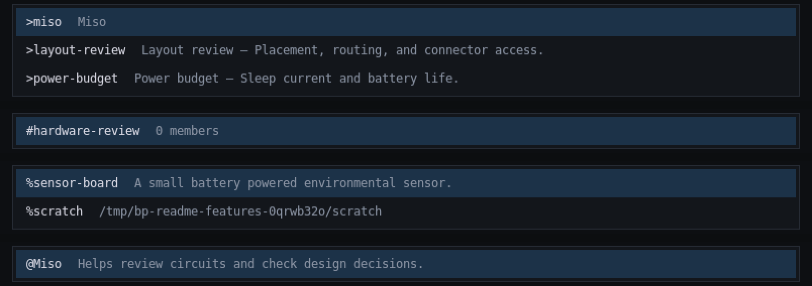
-
Inline terminals for TUIs.
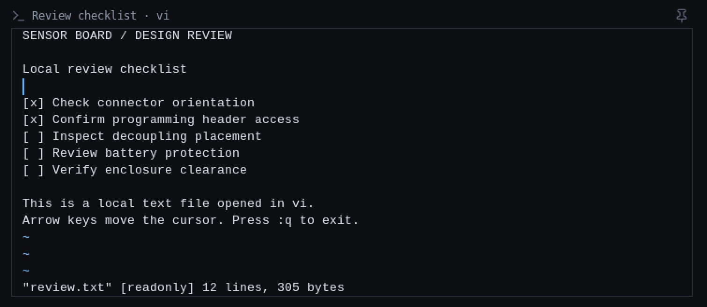
-
/btw.
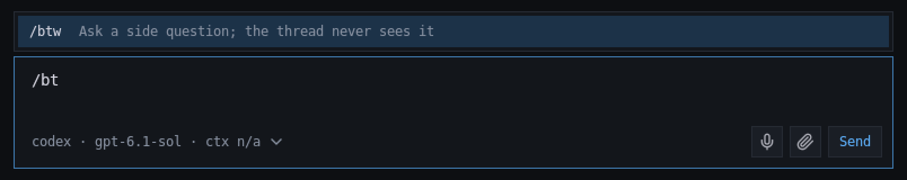
Backplane works with WHATEVER agent you choose to bring. I'm not going to stop you from using Grok, Codex, Claude, Antigravity, Muse, whatever. We even have OpenCode support!
License
MIT. See LICENSE. The KiCad fork retains KiCad's licensing. The STEP converter includes OpenCascade and occt-import-js (LGPL-2.1); see third-party licensing.